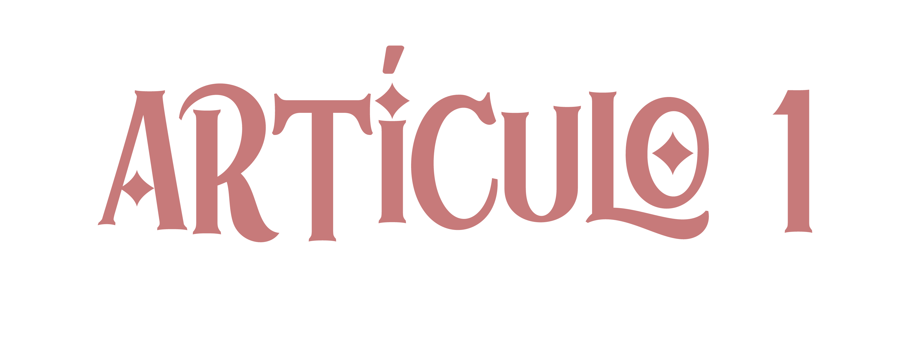
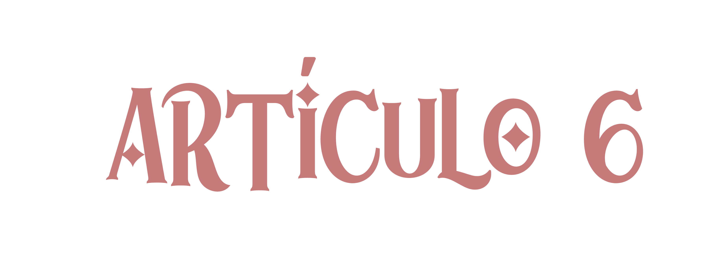
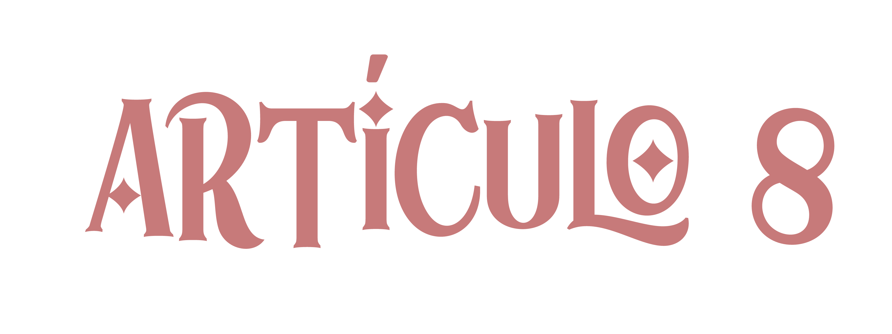

📜 Introducción
La Torre del Héroe es la organización más influyente en la regulación, supervisión y formación de los héroes en el mundo. Su misión principal es garantizar la seguridad y el bienestar de la sociedad mediante la implementación de estrictas normas de conducta y operatividad para aquellos con habilidades sobrehumanas. El presente reglamento establece los principios fundamentales que rigen la actividad heroica dentro de la Torre, asegurando que sus miembros actúen con responsabilidad, integridad y disciplina.
A través de este documento, se detallan las normas y procedimientos que todo héroe, en formación o activo, debe seguir para operar bajo la jurisdicción de la Torre del Héroe. Se establecen claramente las jerarquías, los requisitos para la certificación de héroes, los protocolos de actuación en misiones y las sanciones correspondientes para quienes incumplan las disposiciones establecidas. Este reglamento es de carácter obligatorio y su desconocimiento no exime a ningún héroe de las consecuencias derivadas de su incumplimiento.
Además de regular la conducta heroica, la Torre del Héroe se encarga de mantener el equilibrio entre los individuos con habilidades extraordinarias y la población civil. En este contexto, el reglamento también abarca disposiciones sobre la interacción con otras organizaciones, el control de amenazas y el manejo de crisis globales. La correcta aplicación de estas normas garantiza un entorno de justicia y seguridad para todos.
El heroísmo no es solo una vocación, sino una responsabilidad que conlleva el compromiso de actuar en pro del bien común. La Torre del Héroe es el pilar sobre el cual se sostiene la estabilidad en un mundo donde el poder, si no se controla, puede convertirse en una amenaza. Este reglamento no solo representa un código de conducta, sino también la base de un ideal: la protección de la humanidad y el mantenimiento del orden.
Todos los héroes registrados en la Torre del Héroe deben adherirse a estos lineamientos y aceptar las consecuencias de sus actos. La justicia, la disciplina y el sacrificio son los valores que definen el verdadero significado de ser un héroe.
A continuación, se presenta el Reglamento Oficial de la Torre del Héroe, donde se detallan los artículos y disposiciones que rigen su funcionamiento.

Artículo 1: Organización General de la Torre del Héroe
1. Misión y Propósito de la Torre del Héroe
La Torre del Héroe es la máxima autoridad en la regulación, supervisión y administración de los héroes dentro de la sociedad. Su propósito principal es garantizar la seguridad de los ciudadanos y la correcta utilización de habilidades sobrehumanas en pro del bien común. Desde su fundación, la Torre del Héroe se ha consolidado como el organismo que establece las normas y lineamientos éticos que rigen la actividad heroica, con el fin de prevenir el abuso de poder y mantener el equilibrio en la sociedad.
Además de supervisar la conducta de los héroes, la Torre del Héroe se encarga de su formación, evaluación y certificación, asegurando que solo aquellos aptos para el deber heroico reciban licencia para operar. También coordina la respuesta a crisis, la investigación de amenazas emergentes y la colaboración con entidades gubernamentales y científicas para el desarrollo de estrategias de defensa global.
1.2. Estructura y Ubicación
La Torre del Héroe cuenta con una sede principal, una megaestructura fortificada situada en una ubicación estratégica que le permite supervisar y coordinar misiones a nivel mundial. Este complejo incluye diversas áreas operativas, administrativas y de entrenamiento que permiten la correcta ejecución de sus funciones.
Entre las principales instalaciones de la Torre del Héroe se encuentran:
Centro de Mando y Vigilancia: Donde se monitorean actividades heroicas, criminales y posibles amenazas en tiempo real.
Departamento de Evaluación Psicológica y Física: Encargado de realizar pruebas periódicas a los héroes activos para garantizar su estado óptimo.
Áreas de Entrenamiento Avanzado:** Simuladores de combate y entornos de alto riesgo diseñados para mejorar las habilidades de los héroes.
Oficinas Administrativas: Espacios destinados a la asignación de misiones, procesamiento de licencias y asuntos burocráticos.
División de Tecnología y Desarrollo: Sección responsable de la creación y mejora de equipamiento heroico.
Área de Seguridad y Contención: Espacio donde se mantienen bajo supervisión y restricción a individuos que representen un peligro inminente.
Además de la sede central, la Torre del Héroe tiene múltiples delegaciones en distintos territorios, las cuales están encargadas de coordinar operaciones locales y garantizar una respuesta rápida ante emergencias en cada región.
1.3. Responsabilidades y Funciones
La Torre del Héroe tiene múltiples responsabilidades dentro de la sociedad, incluyendo:
- Supervisión de Héroes: Controla el registro, certificación y desempeño de los héroes activos.
- Regulación de Misiones: Asigna tareas basadas en la clasificación y nivel de experiencia de cada héroe.
- Garantía del Cumplimiento Ético: Asegura que los héroes actúen de acuerdo con los principios morales y legales establecidos.
- Colaboración con Autoridades: Trabaja con gobiernos y fuerzas de seguridad en la gestión de crisis y contención de amenazas.
- Investigación y Desarrollo: Explora nuevas estrategias de combate, defensa y protección mediante avances tecnológicos y científicos.
- Sanciones y Control Disciplinario: Se encarga de castigar y regular a aquellos héroes que incumplan las normas establecidas.
1.4: Financiamiento y Recursos
La Torre del Héroe recibe financiamiento a través de múltiples fuentes, incluyendo acuerdos gubernamentales, patrocinios de corporaciones privadas y donaciones de individuos interesados en la seguridad global. Gracias a este respaldo económico, la organización puede desarrollar nuevas tecnologías, mantener su infraestructura y operar sin depender enteramente de un único sector financiero.
Los recursos de la Torre incluyen:
- Equipo y Armamento Especializado: Trajes, dispositivos de comunicación, vehículos y herramientas de apoyo táctico.
- Centros de Datos e Inteligencia: Donde se almacenan y analizan informes sobre criminales, héroes y amenazas emergentes.
- Unidades de Transporte y Respuesta Rápida: Vehículos de intervención equipados con tecnología de última generación.
- Infraestructura Médica:** Hospitales y centros de recuperación exclusivos para héroes.
1.5. Vigilancia y Control Interno
Para garantizar el correcto funcionamiento de la organización, la Torre del Héroe cuenta con un sistema interno de supervisión y auditoría. Se han establecido múltiples mecanismos de control, incluyendo:
- El Consejo Supremo de la Torre del Héroe: Máxima autoridad encargada de la toma de decisiones y modificaciones del reglamento.
- Comités de Evaluación: Paneles encargados de la revisión de desempeño de héroes activos y candidatos a certificación.
- División de Control de Conducta: Encargada de investigar denuncias de abuso de poder y mala praxis heroica.
- Órganos de Inspección Regional: Supervisores designados en cada delegación para monitorear el cumplimiento de las normas locales.
Los héroes que incumplan las regulaciones establecidas pueden ser sometidos a sanciones disciplinarias, que van desde la suspensión temporal hasta la revocación de su licencia heroica. En casos graves, la Torre tiene la autoridad de proceder con arrestos o juicios internos para juzgar a aquellos que representen una amenaza para la integridad de la organización y la seguridad pública.
1.6 Relación con Otras Organizaciones
Si bien la Torre del Héroe es la entidad de mayor influencia en la regulación heroica, existen otras organizaciones con las que mantiene relaciones de cooperación o supervisión. La colaboración con otras entidades permite una mayor eficiencia en la contención de amenazas y en la protección de la población.
Algunas de las organizaciones con las que la Torre del Héroe mantiene alianzas incluyen:
- Orden de Protección Global (OPG): Asociación encargada de la supervisión internacional de héroes y la cooperación entre gobiernos.
- Alianza Suprema de Vigilancia y Rescate (ASVR): Organización especializada en la respuesta a desastres y evacuaciones de emergencia.
- Federación Avanzada para la Defensa y el Orden (FADO): Entidad que desarrolla tecnología de vanguardia para el mejoramiento de habilidades heroicas.
A pesar de estas alianzas, la Torre del Héroe mantiene una postura de autoridad indiscutible en la mayoría de los asuntos relacionados con la regulación heroica, reservándose el derecho de intervenir en casos que considere una amenaza para el orden público.
1.7 Disposiciones Finales
El presente artículo establece los lineamientos fundamentales sobre la organización y operación de la Torre del Héroe. Cualquier modificación o actualización de estos términos debe ser aprobada por el Consejo Supremo. Todo héroe registrado está obligado a conocer y acatar estas disposiciones, bajo pena de sanción en caso de incumplimiento.
La Torre del Héroe actúa bajo el principio de que el heroísmo es un privilegio, no un derecho, y que aquellos que portan tal responsabilidad deben someterse a las normas que garantizan la estabilidad y seguridad del mundo.

Artículo 2: Jerarquía de la Torre del Héroe
2.1. Consejo Supremo de la Torre del Héroe
El Consejo Supremo es la máxima autoridad dentro de la Torre del Héroe y está compuesto por un grupo selecto de altos mandos con la potestad de dictar normas, aprobar reformas al reglamento y tomar decisiones estratégicas que afectan a toda la comunidad heroica. Su función principal es garantizar que la organización opere de manera eficiente, justa y en cumplimiento con los principios fundamentales de seguridad y control.
El Consejo Supremo se encarga de:
- Aprobar y revisar las políticas generales de la Torre del Héroe.
- Designar y destituir altos cargos dentro de la organización.
- Regular el ingreso de héroes y la clasificación de rangos.
- Evaluar amenazas globales y coordinar respuestas estratégicas.
- Emitir sanciones contra miembros que incumplan los principios de la organización.
- Las reuniones del Consejo Supremo se llevan a cabo de manera mensual, aunque pueden convocarse sesiones extraordinarias en caso de crisis o situaciones de emergencia que requieran una toma de decisiones inmediata.
2.2. Altos Comisionados
Los Altos Comisionados son los representantes directos del Consejo Supremo y actúan como intermediarios entre las distintas divisiones de la Torre del Héroe. Son responsables de la supervisión de operaciones en regiones específicas y tienen autoridad para intervenir en conflictos, asignar recursos y modificar estrategias de acuerdo con las necesidades del momento.
Entre sus responsabilidades destacan:
- Coordinar las operaciones regionales y asegurar el cumplimiento de las normas establecidas por el Consejo Supremo.
- Servir como enlace entre la Torre del Héroe y las entidades gubernamentales locales.
-
valuar la eficiencia de los equipos heroicos en cada zona y recomendar ascensos o degradaciones
-
Garantizar que los héroes bajo su supervisión mantengan un nivel de desempeño óptimo.
-
Los Altos Comisionados deben rendir informes periódicos al Consejo Supremo y justificar sus decisiones en el ámbito administrativo y operativo.
2.3. Generales de Zona
Cada territorio cuenta con un General de Zona, cuya función principal es liderar a los héroes activos en su área de responsabilidad. Estos generales son héroes de alto nivel con una amplia trayectoria y experiencia en combate, por lo que su criterio es fundamental para la gestión de situaciones críticas.
Entre sus atribuciones están:
- Organizar misiones y desplegar equipos según las necesidades de la región.
- Mantener el orden y disciplina dentro de la comunidad heroica.
- Supervisar el entrenamiento de los héroes en formación.
- Actuar como autoridad máxima en casos de emergencia dentro de su jurisdicción.
- Resolver disputas internas entre héroes y garantizar un ambiente de trabajo funcional.
-
Los Generales de Zona tienen autonomía dentro de su región, pero deben reportar todas sus decisiones a los Altos Comisionados.
2.4. Capitanes de Escuadrón
Los Capitanes de Escuadrón son héroes de alto rango encargados de liderar equipos especializados en distintas misiones. Son seleccionados en base a su experiencia, habilidades y liderazgo, y se les asigna la responsabilidad de coordinar operaciones en el campo.
Sus funciones incluyen:
- Guiar a sus equipos en misiones de alto riesgo.
-
Coordinar estrategias de combate y defensa en tiempo real.
-
Mantener la cohesión del grupo y reforzar la moral de los integrantes.
-
Reportar resultados y hallazgos a los Generales de Zona.
-
Evaluar el desempeño de sus subordinados y recomendar promociones o sanciones.
-
Los Capitanes de Escuadrón son una pieza clave en la operatividad de la Torre del Héroe, ya que su liderazgo influye directamente en el éxito o fracaso de las misiones asignadas.
2.5. Héroes Certificados
Los Héroes Certificados son aquellos que han completado su formación dentro de la academia de la Torre del Héroe y han recibido licencia oficial para operar en el campo. Se dividen en diferentes rangos según su nivel de habilidad y experiencia, y tienen la obligación de cumplir con las misiones asignadas y seguir el código de conducta heroico.
Los héroes certificados pueden ascender dentro de la jerarquía si demuestran méritos en combate, liderazgo y desempeño en el cumplimiento de su deber.
2.6. Héroes en Formación
Los Héroes en Formación son reclutas que aún no han obtenido su licencia oficial y están en proceso de entrenamiento dentro de la academia de la Torre del Héroe. Durante este periodo, deben someterse a pruebas físicas, teóricas y psicológicas para evaluar su idoneidad como futuros protectores de la sociedad.
Deben cumplir con los siguientes requisitos:
- Asistir y aprobar todas las sesiones de formación obligatorias.
-
Demostrar habilidades de combate, trabajo en equipo y adaptabilidad en el campo.
-
Mantener una conducta ejemplar y seguir las normas de la academia.
-
Superar las evaluaciones finales para obtener su certificación.
-
Aquellos que no logren completar su formación serán descalificados y no podrán operar como héroes bajo la Torre del Héroe.
2.7. Personal Administrativo y Técnico
El personal administrativo y técnico cumple un papel crucial dentro de la Torre del Héroe, ya que se encarga de la gestión operativa y el mantenimiento de los recursos de la organización. Este grupo incluye analistas, estrategas, científicos, ingenieros, médicos y otros especialistas cuyo trabajo permite el funcionamiento óptimo de la institución.
Entre sus responsabilidades se encuentran:
-
Coordinar la logística y financiamiento de las misiones heroicas.
-
Diseñar y mejorar el equipamiento utilizado por los héroes en el campo.
-
Desarrollar investigaciones sobre amenazas emergentes y posibles mejoras en la regulación heroica.
-
Proveer asistencia médica y psicológica a los héroes que lo requieran.
-
Gestionar la infraestructura y seguridad de la Torre del Héroe y sus delegaciones.
Sin el trabajo de este equipo, la Torre del Héroe no podría operar con la eficiencia necesaria para cumplir su misión de proteger a la humanidad.
2.8. Disposiciones Finales
El presente artículo establece la jerarquía y estructura organizativa de la Torre del Héroe. Cualquier cambio o actualización en la cadena de mando debe ser aprobado por el Consejo Supremo y comunicado a todos los miembros de la organización.
El cumplimiento de esta jerarquía es obligatorio para todos los integrantes de la Torre del Héroe, y cualquier intento de desafiar o alterar el orden establecido sin autorización será considerado una falta grave que puede derivar en sanciones o expulsión.

Artículo 3: Registro y Clasificación de Héroes
3.1. Registro de Héroes
Todo individuo que posea habilidades sobrehumanas y desee operar bajo la jurisdicción de la Torre del Héroe debe someterse al proceso de registro obligatorio. Este procedimiento tiene como finalidad garantizar la regulación y el control de las actividades heroicas dentro de la sociedad, evitando el uso indebido de poderes y la proliferación de justicieros no autorizados.
Los requisitos para el registro incluyen:
Presentación de documentos de identificación oficial.
Evaluación médica y psicológica para determinar la estabilidad del solicitante.
Pruebas de habilidades para clasificar el tipo y nivel de poder.
Firma de un acuerdo de responsabilidad y cumplimiento de las normativas establecidas por la Torre del Héroe.
Una vez completado el proceso, el solicitante recibirá una licencia de héroe, la cual le otorgará autorización para operar en el marco de la legalidad. Aquellos que actúen sin una licencia oficial serán considerados justicieros ilegales y estarán sujetos a sanciones, incluyendo la suspensión de sus actividades o su encarcelamiento.
3.2. Clasificación de Héroes
Los héroes registrados son categorizados en distintos rangos según su nivel de poder, experiencia y capacidad de liderazgo. La clasificación de héroes es esencial para la asignación de misiones y la organización de operativos estratégicos.
3.2.1. Rango S (Élite Suprema)
Los héroes de Rango S son considerados los más poderosos y experimentados dentro de la Torre del Héroe. Sus habilidades son de nivel catastrófico y su intervención se reserva para amenazas de escala global. Son los encargados de liderar operativos de alto riesgo y de coordinar estrategias en situaciones de crisis extrema.
3.2.2. Rango A (Héroes de Alto Nivel)
Este rango está compuesto por héroes altamente capacitados, con habilidades avanzadas y una amplia trayectoria en el campo. Son asignados a misiones de alto riesgo y suelen actuar como segundos al mando en operativos dirigidos por héroes de Rango S.
3.2.3. Rango B (Héroes Especializados)
Los héroes de Rango B poseen habilidades significativas y desempeñan un papel fundamental en la defensa y protección de la sociedad. Se especializan en diversas áreas, como combate cuerpo a cuerpo, espionaje, rescate o apoyo táctico.
3.2.4. Rango C (Héroes Operativos)
Este rango incluye héroes con habilidades moderadas que son asignados a tareas de apoyo y defensa civil. Su labor es crucial en la prevención del crimen y la asistencia en desastres naturales y emergencias.
3.2.5. Rango D (Héroes en Formación)3.2.5.
Los héroes de Rango D son aquellos que han obtenido recientemente su licencia y aún están en proceso de perfeccionamiento. Operan bajo la supervisión de héroes de mayor rango y deben completar una serie de misiones antes de ascender.
3.3. Proceso de Revisión y Ascenso de Rango
- El desempeño de cada héroe es evaluado periódicamente para determinar si está capacitado para ascender a un rango superior. Este proceso se basa en:
-
Registro de misiones completadas y desempeño en combate.
-
Evaluaciones de liderazgo y trabajo en equipo.
-
Análisis de estabilidad psicológica y mentalidad estratégica.
Las revisiones son llevadas a cabo por un comité de evaluación designado por la Torre del Héroe. Solo aquellos héroes que cumplan con los criterios establecidos serán promovidos.
3.4. Revocación de Licencia y Expulsión
El incumplimiento de las normas de la Torre del Héroe puede derivar en la suspensión o revocación de la licencia de un héroe. Entre las causas que pueden motivar una sanción se encuentran:
-
Uso indebido de habilidades para beneficio personal o actos criminales.
-
Incumplimiento de órdenes directas en situaciones de emergencia.
-
Conducta imprudente que ponga en riesgo la seguridad de la población o de otros héroes.
Los héroes sancionados podrán apelar su caso ante el Consejo Supremo, pero si se determina que son una amenaza para la estabilidad de la organización, serán expulsados permanentemente y se les prohibirá cualquier actividad heroica.
3.5. Disposiciones Finales
El presente artículo establece los lineamientos generales para el registro y clasificación de héroes dentro de la Torre del Héroe. Cualquier modificación o ajuste en las normativas deberá ser aprobado por el Consejo Supremo y comunicado a todos los miembros activos de la organización.
El cumplimiento de este reglamento es obligatorio y cualquier intento de operar fuera de los términos establecidos será tratado con la severidad correspondiente.

Artículo 4: Código de Conducta y Responsabilidades de los Héroes
4.1. Principios Fundamentales
Todo héroe registrado bajo la jurisdicción de la Torre del Héroe debe actuar conforme a los principios de justicia, integridad y responsabilidad. Estos principios son la base del código de conducta y deben ser seguidos en todo momento, tanto en servicio como fuera de él. Cualquier incumplimiento será motivo de sanción, evaluación o, en casos graves, expulsión de la organización.
Los principios fundamentales incluyen:
-
Protección de la vida humana: La seguridad de los civiles siempre debe ser la prioridad.
-
Disciplina y obediencia: Los héroes deben acatar las órdenes de sus superiores y seguir protocolos establecidos.
-
Uso responsable de habilidades: No se permite el uso de poderes para beneficio personal, lucro o venganzas personales.
-
Respeto a la ley: Los héroes operan dentro del marco legal y no deben actuar por encima de la autoridad gubernamental.
-
Neutralidad política: La Torre del Héroe no apoya ideologías políticas ni toma parte en conflictos de esta índole.
4.2. Restricciones y Prohibiciones
Los héroes deben abstenerse de:
-
Utilizar sus habilidades para intimidar, extorsionar o manipular a la población.
-
Tomar justicia por mano propia sin el respaldo de la Torre del Héroe.
-
Mantener relaciones con criminales o grupos terroristas.
-
Usar información privilegiada con fines personales o comerciales.
-
Participar en actos de corrupción, soborno o encubrimiento de crímenes.
-
Actuar en estado de ebriedad, bajo el efecto de drogas o cualquier sustancia que altere sus capacidades.
4.3. Uso de la Fuerza
Los héroes deben aplicar la fuerza de manera proporcional y solo cuando sea estrictamente necesario. Se establecen los siguientes lineamientos:
-
Fuerza mínima necesaria: La violencia solo debe emplearse cuando la diplomacia ha fracasado.
-
No letalidad: Se debe priorizar la captura de criminales en lugar de su eliminación, salvo en casos extremos.
-
Coordinación con las autoridades: Siempre que sea posible, los héroes deben trabajar en conjunto con las fuerzas de seguridad del estado.
-
Uso de habilidades de alto impacto: Requiere autorización previa de un superior salvo en emergencias.
4.4. Juramento del Héroe
Antes de recibir su licencia, cada héroe debe prestar el Juramento del Héroe, en el cual se compromete a:
-
Defender la justicia y la vida por encima de sus propios intereses.
-
Cumplir las leyes y regulaciones de la Torre del Héroe sin cuestionamientos.
-
Ser un símbolo de esperanza y orden para la sociedad.
-
No abusar de su poder bajo ninguna circunstancia.
4.5. Evaluaciones y Supervisión
Para garantizar que los héroes cumplan con el código de conducta, se implementan medidas de evaluación periódicas:
-
Pruebas psicológicas y de salud mental: Aplicadas cada seis meses para detectar posibles desviaciones en el comportamiento.
-
Supervisión en misiones: Cada héroe es monitoreado por superiores para evaluar su desempeño.
-
Revisión de denuncias: Todo héroe que reciba quejas o acusaciones será investigado por un comité disciplinario.
4.6. Procedimiento Disciplinario y Sanciones
Las faltas cometidas por héroes serán evaluadas y sancionadas según su gravedad:
-
Faltas menores: Incluyen conductas irrespetuosas, incumplimiento de horarios o fallos menores en misiones. Sanción: advertencia formal.
-
Faltas graves: Uso indebido de habilidades, insubordinación, daño colateral excesivo. Sanción: suspensión temporal o degradación de rango.
-
Faltas críticas: Corrupción, asesinato injustificado, traición a la Torre del Héroe. Sanción: expulsión y, en casos extremos, persecución legal.
4.7. Disposiciones Finales
El cumplimiento de este código de conducta es obligatorio para todos los héroes. Cualquier intento de eludir estas normas será considerado una falta grave y tratado con la severidad correspondiente. La Torre del Héroe se reserva el derecho de modificar y actualizar estas regulaciones según las circunstancias lo requieran.

Artículo 5: Uso de la Fuerza y Regulaciones de Combate
5.1. Principios Generales sobre el Uso de la Fuerza
El uso de la fuerza por parte de los héroes debe regirse bajo los principios de necesidad, proporcionalidad y legalidad. La Torre del Héroe establece que la intervención heroica debe ser controlada, evitando daños colaterales innecesarios y protegiendo la vida de los civiles en todo momento.
Los principios fundamentales son:
-
Necesidad: La fuerza solo debe utilizarse cuando no haya otra opción viable para neutralizar una amenaza.
-
Proporcionalidad: La cantidad de fuerza aplicada debe estar en relación con el nivel de peligro presente.
-
Legalidad: Los héroes deben actuar dentro del marco normativo establecido por la Torre del Héroe y las leyes vigentes.
5.2. Niveles de Uso de la Fuerza
Para garantizar un manejo adecuado del combate, la Torre del Héroe define los siguientes niveles de intervención:
5.2.1. Nivel 1 – Disuasión
-
Uso de presencia intimidatoria y advertencias verbales.
-
Intento de resolución pacífica antes de emplear fuerza física.
-
Aplicación de tácticas de control de multitudes sin contacto directo.
5.2.2. Nivel 2 – Control Físico Moderado
-
Uso de técnicas de restricción sin causar lesiones permanentes.
-
Neutralización de amenazas mediante maniobras defensivas.
-
Empleo de equipo no letal (porras, redes de contención, proyectiles aturdidores).
5.2.3. Nivel 3 – Fuerza Letal Restringida
-
Aplicación de habilidades para incapacitar a un enemigo con daño controlado.
-
Uso de armas especializadas bajo autorización de un superior.
-
Se permite la inmovilización permanente de amenazas extremas con aprobación previa.
5.2.4. Nivel 4 – Eliminación de Amenazas Críticas
-
Solo permitido en casos de peligro extremo para la humanidad.
-
Aplicación de fuerza letal cuando no haya otra alternativa viable.
-
Requiere autorización del Consejo Supremo, salvo en emergencias absoluta.
5.3. Regulaciones Específicas para el Uso de Habilidades en Combate
Dado el potencial destructivo de algunas habilidades sobrehumanas, la Torre del Héroe impone las siguientes restricciones:
-
Uso de habilidades de gran impacto: Solo en zonas previamente evacuadas o con mínima presencia civil.
-
Combate en áreas urbanas: Se priorizará el uso de maniobras de contención y evacuación antes de iniciar hostilidades.
-
Uso de habilidades de manipulación mental o emocional: Requiere autorización especial y supervisión psicológica.
-
Técnicas de alto riesgo: Habilidades de destrucción masiva deben ser registradas y aprobadas antes de su uso en combate.
5.4. Coordinación con Fuerzas de Seguridad y Otros Héroes
Los héroes deben colaborar con otras autoridades para evitar conflictos de jurisdicción y garantizar un despliegue efectivo en el campo. Se establecen las siguientes normativas:
-
Notificación previa de intervención: Antes de actuar en una situación de alto riesgo, debe informarse a las fuerzas de seguridad locales.
-
Trabajo en equipo: En misiones conjuntas, se debe seguir la jerarquía establecida para evitar descoordinaciones.
-
Uso de códigos de comunicación: Para prevenir confusiones en combate, todos los héroes deben utilizar los canales de comunicación oficiales.
-
5.5. Responsabilidad por Daños Colaterales
Cualquier daño causado a la propiedad pública o privada durante una intervención heroica será evaluado bajo las siguientes directrices:
-
Daños justificados: Si el daño fue inevitable y se evitó una amenaza mayor, no habrá sanción.
-
Daños excesivos: Si se determina que la destrucción fue innecesaria, el héroe responsable puede enfrentar penalizaciones, incluyendo suspensión temporal.
-
Negligencia o abuso de poder: Casos en los que se identifique un uso injustificado de la fuerza pueden llevar a sanciones severas o expulsión.
5.6. Prohibiciones Absolutas en el Uso de la Fuerza
Los héroes tienen prohibido:
-
Atacar a civiles bajo cualquier circunstancia.
-
Utilizar la fuerza para resolver disputas personales.
-
Aplicar tortura o cualquier tipo de castigo físico a detenidos.
-
Usar habilidades para forzar confesiones o manipular la voluntad de una persona sin autorización.
-
Actuar fuera de su jurisdicción sin autorización explícita de la Torre del Héroe.
5.7. Sanciones por Uso Indebido de la Fuerza
El mal uso de la fuerza conlleva distintas penalizaciones dependiendo de la gravedad del acto:
-
Faltas menores: Uso indebido de habilidades en combate no autorizado. Sanción: Advertencia formal.
-
Faltas graves: Uso de habilidades en situaciones donde no eran necesarias o daño colateral excesivo. Sanción: Suspensión o degradación de rango.
-
Faltas críticas: Uso letal sin justificación, tortura o daño a civiles. Sanción: Expulsión y posible acción legal.
5.8. Disposiciones Finales
El presente artículo regula el uso de la fuerza y las prácticas de combate dentro de la Torre del Héroe. Todo héroe debe conocer y respetar estas normas, actuando siempre con responsabilidad y dentro de los parámetros establecidos por la organización. Cualquier revisión o modificación de estas regulaciones debe ser aprobada por el Consejo Supremo.

Artículo 6: Regulación sobre Híbridos y su Exclusión de la Torre del Héroe
6.1. Declaración Oficial sobre los Híbridos
La Torre del Héroe, como institución rectora del orden y la justicia, se ha comprometido desde su fundación a preservar la seguridad y estabilidad de la humanidad. En este contexto, la inclusión de elementos inestables dentro de su estructura no solo sería irresponsable, sino potencialmente catastrófica.
Los híbridos, seres cuya propia existencia desafía los principios de control y regulación, representan una variable inaceptable dentro de la comunidad heroica. Su constitución biológica impredecible, su naturaleza primitiva y su incapacidad para adherirse a los estándares de disciplina y autocontrol los convierten en una amenaza latente para la integridad del sistema.
Por lo tanto, se establece de manera irrevocable la prohibición absoluta del ingreso de híbridos a la Torre del Héroe, garantizando así que el ideal del heroísmo permanezca en manos de aquellos verdaderamente capaces de ejercerlo con responsabilidad y honor.
6.2. Motivos de la Exclusión de los Híbridos
6.2.1. Inestabilidad Biológica e Impulsos Incontrolables
Los híbridos presentan mutaciones biológicas que varían de un individuo a otro, lo que imposibilita su estandarización dentro de los protocolos de entrenamiento y operación.
A diferencia de los héroes humanos, quienes pueden ser sometidos a rigurosas evaluaciones psicológicas y de aptitud, los híbridos exhiben patrones de comportamiento erráticos que dificultan su supervisión.
Numerosos estudios han demostrado que, bajo condiciones de estrés o combate, los híbridos tienden a responder con agresividad desmedida, guiados por sus instintos más primitivos en lugar de la razón.
6.2.2. Amenaza para la Seguridad Pública
Se ha comprobado que los híbridos poseen una fuerza y resistencia superiores a la de los humanos, lo que los convierte en agentes de destrucción potencial si su control se ve comprometido.
En múltiples ocasiones, híbridos que han intentado actuar como héroes han provocado más daño del que han evitado, debido a su falta de contención y criterio táctico.
La Torre del Héroe no puede permitir que individuos con tales niveles de poder operen sin una regulación absoluta, y dado que los híbridos no pueden ser sometidos a dicha regulación, su exclusión es el único curso de acción sensato.
6.2.3. Imposibilidad de Integración en la Estructura Heroica
La comunidad heroica exige un código de conducta riguroso y una jerarquía clara, elementos que los híbridos, con su naturaleza volátil y su resistencia a la autoridad, han demostrado ser incapaces de respetar.
El heroísmo requiere disciplina, autocontrol y un sentido del deber que los híbridos, con su mentalidad instintiva y su falta de comprensión de la ética humana, no pueden alcanzar.
Permitir híbridos en la Torre del Héroe sería equivalente a introducir un elemento caótico en un sistema que debe mantenerse bajo orden absoluto.
6.3. Normativas Específicas sobre los Híbridos
6.3.1. Prohibición de Ingreso a la Torre del Héroe
Se prohíbe estrictamente la inscripción de híbridos en la Academia de Héroes, sin excepciones.
Se realizarán pruebas genéticas a todos los aspirantes a héroes para detectar y excluir cualquier traza híbrida en su ascendencia.
Cualquier individuo que intente ocultar su naturaleza híbrida será tratado como una amenaza a la seguridad de la organización.
6.3.2. Restricciones para Héroes Humanos en Relación con los Híbridos
Queda terminantemente prohibido que héroes humanos entrenen, apoyen o colaboren con híbridos en cualquier capacidad heroica.
Un héroe que establezca vínculos de lealtad con un híbrido será investigado por posible traición a la Torre del Héroe.
En caso de que un héroe sea sorprendido protegiendo a un híbrido en una operación oficial, su licencia heroica será revocada de inmediato.
6.3.3. Vigilancia y Control de Híbridos en Actividades Heroicas
La Torre del Héroe mantendrá un registro activo de híbridos identificados y llevará a cabo una vigilancia permanente sobre aquellos que representen una amenaza potencial.
Se han conformado brigadas de intervención especializadas en la contención y neutralización de híbridos que intenten actuar como héroes.
En caso de que un híbrido interfiera en una operación de la Torre del Héroe, se autoriza el uso de fuerza letal si es necesario para preservar la seguridad de los héroes humanos y de la población.
6.4. Casos Históricos que Justifican la Exclusión de los Híbridos
Caso "Omega Azul" (2036)
Un híbrido de Elytrio intentó operar como héroe sin autorización, causando un derrumbe que resultó en la muerte de más de treinta civiles y dos héroes certificados.
Su falta de control y su incapacidad para coordinarse con las unidades de la Torre del Héroe lo convirtieron en una amenaza en lugar de una ayuda.
A raíz de este desastre, se implementó la primera legislación oficial que prohibía a los híbridos actuar como héroes.
Caso "Colapso de Havenbridge" (2041)
Un híbrido aviar ingresó clandestinamente a la Academia de Héroes y permaneció oculto durante años hasta ser descubierto.
Su reacción al ser confrontado fue un estallido de violencia desproporcionada, lo que resultó en múltiples heridos entre el personal de la Torre del Héroe.
Este evento llevó a la implementación de pruebas genéticas obligatorias para todos los aspirantes a héroes.
6.5. Declaración Final sobre la Exclusión de Híbridos
La Torre del Héroe no puede permitirse el lujo de tomar riesgos innecesarios cuando se trata de la seguridad del mundo. Los híbridos, por su propia naturaleza, representan un elemento incontrolable y, por lo tanto, no tienen cabida dentro de la organización heroica.
El heroísmo es un deber que requiere razón, control y un compromiso absoluto con la seguridad de la humanidad. Confiar en híbridos para esta labor sería una imprudencia sin precedentes, una irresponsabilidad que pondría en peligro la integridad misma del orden establecido.
Por lo tanto, se reafirma la postura de que los híbridos no pueden ni podrán jamás ser héroes bajo la jurisdicción de la Torre del Héroe.
Todo héroe tiene la obligación de hacer cumplir esta norma y reportar cualquier intento de infiltración híbrida en la comunidad heroica. Cualquier acto de desobediencia o cuestionamiento de esta política será tratado con la severidad correspondiente.

Artículo 7: Procedimientos de Evaluación y Control de los Héroes
7.1. Evaluaciones Periódicas
Todos los héroes registrados en la Torre del Héroe deben someterse a evaluaciones periódicas para garantizar su aptitud física, mental y ética. Estas evaluaciones se realizan con el fin de asegurar que los héroes mantengan los estándares de la organización y continúen siendo aptos para el servicio activo.
Las evaluaciones incluyen:
-
Pruebas físicas: Medición de resistencia, fuerza, velocidad y reflejos.
-
Evaluaciones psicológicas: Exámenes para determinar estabilidad emocional y mental.
-
Simulaciones de combate: Situaciones prácticas para evaluar desempeño en condiciones de presión.
-
Revisión de conducta y ética: Análisis de comportamiento en misiones y relación con civiles y compañeros.
Los resultados de estas evaluaciones determinarán si un héroe mantiene su licencia, requiere entrenamiento adicional o debe ser suspendido temporalmente.
7.2. Niveles de Evaluación
Las evaluaciones se dividen en distintos niveles según la categoría y antigüedad del héroe:
7.2.1. Evaluación Inicial (Ingreso a la Torre del Héroe)
Todo aspirante a héroe debe someterse a un riguroso examen de ingreso que incluye pruebas físicas, mentales y tácticas. Solo aquellos que aprueben con éxito podrán recibir su licencia provisional y avanzar en el proceso de formación.
- 7.2.2. Evaluaciones Anuales
Todos los héroes activos deben someterse a una evaluación general una vez al año para garantizar que siguen cumpliendo con los estándares de la organización.
- 7.2.3. Evaluaciones de Alto Riesgo
Héroes de Rango S y A deben someterse a pruebas especializadas cada seis meses debido a la peligrosidad de sus habilidades y el impacto de sus acciones en la sociedad.
- 7.2.4. Evaluaciones Especiales para Híbridos
Los héroes híbridos deben pasar por controles más estrictos cada tres meses para monitorear la estabilidad de sus habilidades y comportamiento.
7.3. Supervisión y Control de Conducta
Para prevenir el abuso de poder y garantizar la seguridad de los civiles, la Torre del Héroe implementa los siguientes mecanismos de supervisión:
Monitoreo en misiones: Héroes de menor rango deben ser supervisados por un superior durante sus primeras 50 misiones.
-
Uso de cámaras corporales: En ciertas operaciones, los héroes pueden ser equipados con dispositivos de grabación para evaluar su desempeño.
-
Seguimiento de quejas y denuncias: Se investiga cualquier reporte de conducta inadecuada por parte de un héroe.
-
Evaluaciones sorpresa: Se pueden realizar pruebas no anunciadas para verificar el cumplimiento de normas en todo momento.
7.4. Sanciones por Bajo Desempeño o Mala Conducta
Si un héroe no cumple con las expectativas establecidas por la Torre del Héroe, se aplicarán sanciones según la gravedad de la falta:
Advertencia formal: Para errores menores o descuidos ocasionales.
-
Entrenamiento obligatorio: Si se detectan deficiencias en el rendimiento, el héroe deberá someterse a sesiones de readaptación.
-
Suspensión temporal: En casos de conducta inapropiada o reiteradas fallas en evaluaciones.
-
Degradación de rango: Héroes que no cumplan con los estándares pueden ser rebajados a un nivel inferior.
-
Expulsión definitiva: Para aquellos que presenten una actitud irresponsable, desobediencia grave o falta de aptitudes para continuar en la organización.
7.5. Comité de Revisión y Apelaciones
En caso de que un héroe reciba una sanción con la que no esté de acuerdo, tiene derecho a solicitar una revisión ante el Comité de Revisión de la Torre del Héroe. Este comité evaluará el caso y determinará si la sanción se mantiene, se reduce o se revoca.
El comité está compuesto por:
-
Un representante del Consejo Supremo.
-
Un alto comisionado.
-
Un capitán de escuadrón.
-
Un evaluador independiente.
Los héroes que deseen apelar deben presentar pruebas que respalden su caso dentro de los 30 días posteriores a la sanción.
7.6. Disposiciones Finales
El cumplimiento de los procedimientos de evaluación y control es obligatorio para todos los héroes. La Torre del Héroe se reserva el derecho de modificar y actualizar estos procedimientos según las necesidades operativas y el desarrollo de nuevas regulaciones. Todo héroe que desee continuar en servicio debe someterse a estas evaluaciones sin excepción.

Artículo 8: Procedimientos de Misión y Protocolos Operativos
8.1. Asignación de Misiones
Todas las misiones realizadas por héroes bajo la jurisdicción de la Torre del Héroe deben ser oficialmente asignadas a través del Centro de Control de Operaciones. La asignación de misiones se basa en:
-
Rango y habilidades del héroe.
-
Nivel de peligro de la misión.
-
Disponibilidad de equipos de apoyo.
-
Evaluación de riesgo según los registros de inteligencia.
Los héroes no pueden aceptar misiones fuera del sistema oficial sin autorización expresa de un superior.
8.2. Clasificación de Misiones
Las misiones son clasificadas de acuerdo con su nivel de dificultad y prioridad:
8.2.1. Nivel 1 – Emergencias Civiles
-
Respuesta a desastres naturales y accidentes masivos.
-
Control de disturbios menores.
-
Rescate y evacuación de civiles en peligro.
8.2.2. Nivel 2 – Operaciones de Seguridad
- Captura de criminales con habilidades sobrehumanas.
- Misiones de escolta de personal gubernamental o científico.
-
Desactivación de amenazas inminentes en zonas urbanas.
8.2.3. Nivel 3 – Misiones de Alto Riesgo
-
Enfrentamientos con grupos terroristas o villanos de alto nivel
-
Respuesta a amenazas interdimensionales o biológicas.
-
Intervención en zonas de guerra o conflictos globales.
8.2.4. Nivel 4 – Crisis Globales
-
Enfrentamiento contra entidades de poder extremo.
-
Prevención de cataclismos de impacto global.
-
Defensa contra ataques masivos de fuerzas hostiles.
8.3. Protocolos de Ejecución de Misiones
Para garantizar la seguridad de los héroes y la población civil, todas las misiones deben seguir los siguientes protocolos:
-
Planificación previa: Antes de cualquier despliegue, se debe analizar la situación con datos de inteligencia.
-
Liderazgo designado: Cada equipo debe contar con un líder que se encargue de la estrategia y coordinación.
-
Evaluación de condiciones: Se deben establecer rutas de evacuación y zonas seguras para los civiles.
-
Informe posterior: Todo héroe debe presentar un informe detallado tras completar una misión.
8.4. Restricciones y Prohibiciones en Misiones
-
Para evitar incidentes y asegurar la efectividad operativa, los héroes tienen prohibido:
-
Actuar sin autorización oficial en situaciones de riesgo.
-
Poner en peligro la vida de civiles mediante el uso irresponsable de habilidades.
-
Desobedecer órdenes directas de sus superiores en combate.
-
Retirarse de una misión sin una justificación válida.
-
Utilizar misiones para intereses personales o políticos.
8.5. Penalizaciones por Incumplimiento de Protocolos
El incumplimiento de los procedimientos establecidos en este artículo conllevará sanciones dependiendo de la gravedad de la infracción:
-
Advertencia formal: Para infracciones leves como retrasos o errores menores en planificación.
-
Suspensión temporal: Para desobediencia operativa o uso indebido de habilidades en el campo.
-
Degradación de rango: Para héroes que pongan en peligro a civiles o compañeros.
-
Expulsión y proceso legal: Para casos de abandono de misión sin justificación o traición a la Torre del Héroe.
8.6. Revisión y Actualización de Protocolos
Los protocolos de misión son revisados periódicamente por el Consejo Supremo de la Torre del Héroe. Cualquier actualización será comunicada de inmediato a todos los héroes activos y deberá ser acatada sin excepción.

Artículo 9: Entrenamiento y Formación de Héroes
9.1. Objetivo del Programa de Formación
El entrenamiento dentro de la Torre del Héroe tiene como objetivo preparar a los aspirantes para desempeñar sus funciones de manera efectiva, garantizando su capacidad física, mental y estratégica en el campo de batalla. La formación está diseñada para desarrollar habilidades tácticas, mejorar el control de poderes y fomentar la disciplina en cada héroe.
9.2. Fases del Entrenamiento
El proceso de formación de héroes consta de varias fases diseñadas para evaluar y desarrollar sus habilidades en diferentes niveles:
9.2.1. Fase Inicial: Evaluación y Selección
-
Pruebas físicas y psicológicas para determinar aptitudes.
-
Análisis de compatibilidad con el código de conducta heroico.
-
Clasificación preliminar de habilidades y niveles de riesgo.
9.2.2. Fase Intermedia: Entrenamiento Básico
-
Desarrollo de técnicas de combate cuerpo a cuerpo y tácticas defensivas.
-
Uso responsable de habilidades especiales.
-
Simulaciones de misiones en ambientes controlados.
-
Estrategias de rescate y evacuación de civiles.
9.2.3. Fase Avanzada: Misiones Simuladas y Evaluaciones Finales
-
Misiones prácticas supervisadas por héroes de alto rango.
-
Evaluación en combate real bajo condiciones de estrés.
-
Pruebas de liderazgo y toma de decisiones en situaciones de crisis.
-
Control emocional y estabilidad psicológica en combate.
9.3. Categorías de Entrenamiento
Cada héroe es entrenado según sus habilidades y área de especialización. Existen diferentes programas dentro de la Torre del Héroe:
-
Unidad de Combate: Enfocado en la lucha directa contra amenazas de alto nivel.
-
Unidad de Rescate y Apoyo: Especializada en salvamento y asistencia a civiles en desastres.
-
Unidad de Inteligencia y Estrategia: Formación en recopilación de información y planificación táctica.
-
Unidad de Tecnologías y Armamento: Capacitación en el uso de equipamiento y herramientas avanzadas.
9.4. Requisitos para la Graduación
Para obtener la certificación como héroe oficial, los aspirantes deben:
-
Completar exitosamente las pruebas finales de su respectiva categoría.
-
Aprobar los exámenes de control emocional y estabilidad mental.
-
Recibir la aprobación de un mentor o instructor de alto rango.
-
Demostrar disciplina y cumplimiento del código de conducta.
9.5. Sanciones y Reentrenamiento
Los aspirantes que no cumplan con los estándares de la Torre del Héroe pueden ser sometidos a:
- Reentrenamiento obligatorio en caso de deficiencias en combate o estrategia.
-
Suspensión temporal si presentan problemas de disciplina o conducta inadecuada.
-
Expulsión definitiva si fallan repetidamente en cumplir con los requisitos mínimos.
9.6. Actualización y Perfeccionamiento
Todos los héroes, incluso aquellos ya certificados, deben someterse a programas de actualización y perfeccionamiento cada cierto tiempo para mantenerse en óptimas condiciones y adaptarse a nuevas amenazas.
9.7. Disposiciones Finales
El programa de formación de héroes es de cumplimiento obligatorio para todos los aspirantes y será supervisado directamente por la Torre del Héroe. Cualquier modificación en el sistema de entrenamiento será aprobada por el Consejo Supremo.

Artículo 10: Disposiciones Finales y Modificaciones al Reglamento
10.1. Cumplimiento Obligatorio del Reglamento
El presente reglamento es de cumplimiento obligatorio para todos los héroes, aspirantes, personal administrativo y cualquier individuo registrado en la Torre del Héroe. Su desconocimiento no exime a ningún miembro de su responsabilidad legal y ética dentro de la organización.
10.2. Mecanismos de Supervisión y Aplicación
-
Para garantizar el cumplimiento de este reglamento, la Torre del Héroe implementará los siguientes mecanismos de control:
-
Inspecciones periódicas en todas las divisiones y sucursales de la organización.
-
Revisión constante del desempeño de héroes y personal administrativo.
-
Sanciones inmediatas para aquellos que infrinjan las normas establecidas.
-
Auditorías internas y externas para evaluar la efectividad de las normativas.
10.3. Proceso de Modificación del Reglamento
Las normas establecidas en este documento podrán ser modificadas o ampliadas bajo las siguientes condiciones:
-
Revisión semestral por parte del Consejo Supremo para evaluar la necesidad de cambios.
-
Propuestas de reforma presentadas por altos mandos o miembros con rango de Capitán en adelante.
-
Aprobación por mayoría del Consejo Supremo para que cualquier modificación entre en vigor.
-
Publicación y comunicación oficial de los cambios a todos los miembros de la Torre del Héroe.
10.4. Protección y Seguridad de la Torre del Héroe
Con el fin de garantizar la continuidad operativa de la organización, se establecen las siguientes medidas de seguridad:
-
Cualquier amenaza interna o externa contra la Torre del Héroe será tratada como prioridad máxima.
-
La información clasificada será protegida bajo estrictos protocolos de seguridad.
-
Todo miembro de la Torre tiene la obligación de reportar cualquier actividad sospechosa o amenaza.
10.5. Clausura y Vigencia
El presente reglamento entra en vigor a partir de su publicación oficial y se mantendrá vigente hasta que el Consejo Supremo determine lo contrario.
Toda persona que decida formar parte de la Torre del Héroe, ya sea como héroe, personal técnico o administrativo, acepta este reglamento y se compromete a su cumplimiento sin excepciones.